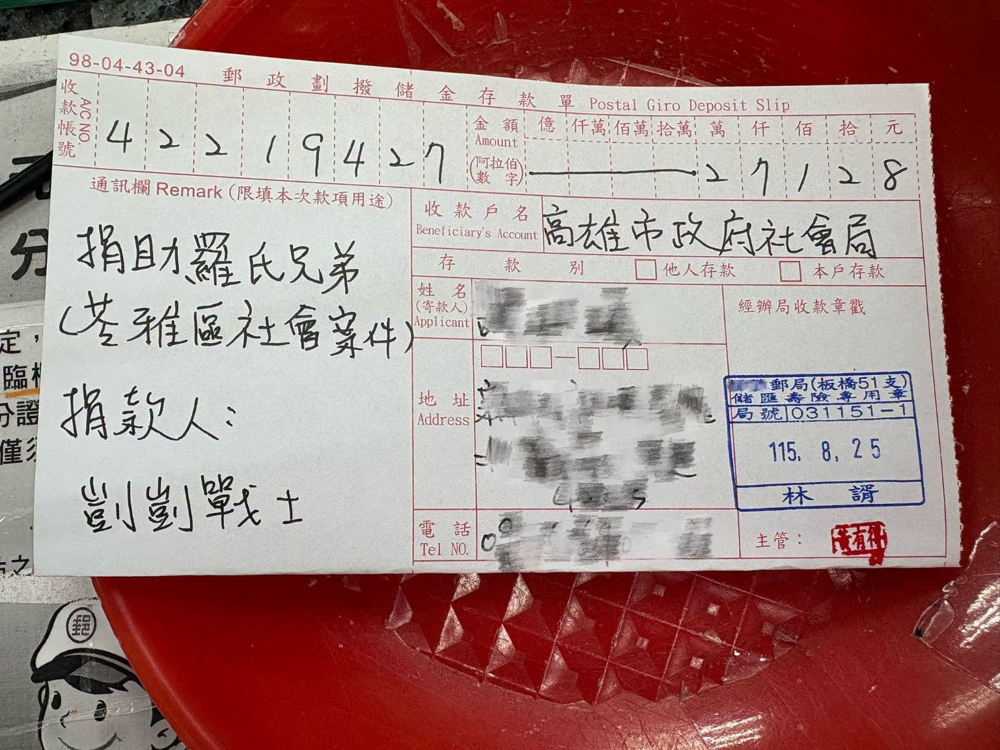
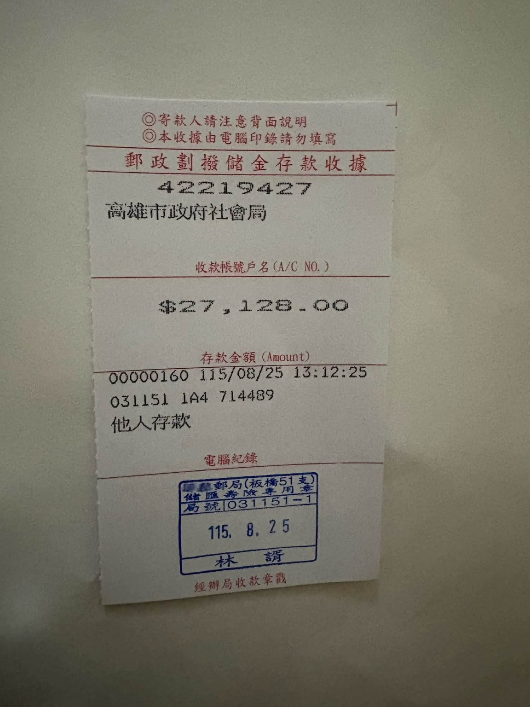

一場行動結束了，但大家共同留下的善意，沒有停在結算表的最後一行。
感謝所有支持 1/11「反廢死・護兒少大遊行」的朋友。此次活動在「兒少守護社群」內互助募集的活動公費，經相關支出完成結算後，結餘新臺幣 27,128 元。
由於這筆結餘款項至今沒有其他活動支出或使用需求，經討論後，我們決定將大家共同支持所留下的心意，全數捐贈予羅氏兄弟。本次捐款透過家屬公開募款管道進行，希望為歷經重大變故的被害家庭，盡一份微薄而真實的支持。
款項來源1/11 活動互助公費活動相關支出結算後之餘額。
結餘金額新臺幣 27,128 元沒有其他活動用途，全額捐出。
捐贈對象羅氏兄弟透過家屬公開募款管道辦理。
讓每一筆共同託付都有清楚去向，也讓一次活動的結餘，成為另一個家庭重新站穩的支持。
善意如何被延續
這筆款項不是額外發起的新募款，而是 1/11 活動公費完成結算後留下的餘額。我們選擇不讓它閒置，也不改作其他用途；在沒有後續活動支出的情況下，將 27,128 元完整送往真正需要被關心的地方。
對受害家庭而言，支持不只是一個數字。它代表有人記得遭遇過的傷痛，也願意在漫長的復原路上，實際分擔一小段重量。對所有曾參與活動的朋友而言，這次捐贈也讓共同投入的心意有了可被查驗、可被說明的後續。
款項流向與完成證明


公開與隱私並重
本頁公開足以核對款項流向、金額與日期的憑證資訊；寄款人姓名、地址及電話等個人資料維持遮蔽，不予揭露。
謝謝每一份參與與信任
感謝所有曾參與、協助及支持 1/11 活動的朋友。有人到場、有人成為志工、有人協助物資與行政，也有人持續關注兒少保護與被害家庭。正是這些不同形式的投入，讓一次公共倡議不只停留在當天，而能繼續成為照顧他人的力量。
我們會持續以公開、清楚、可追溯的方式說明活動款項，珍惜每一份託付，也繼續把對孩子與被害家庭的關心，落實成具體行動。